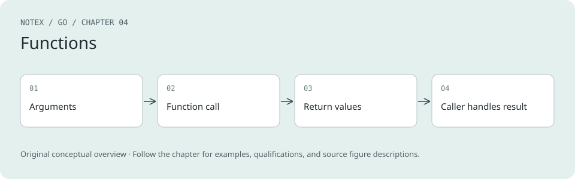

Chapter 4. Functions
A Note for Early Release Readers
With Early Release ebooks, you get books in their earliest form—the author’s raw and unedited content as they write—so you can take advantage of these technologies long before the official release of these titles.
This will be the fifth chapter of the final book. Please note that the GitHub repo will be made active later on.
If you’d like to be actively involved in reviewing and commenting on this draft, please reach out to the editor at sgrey@oreilly.com.
So far, your programs have been limited to a few lines in the main function. It’s time to get bigger. In this chapter, you’re going to learn how to write functions in Go and see all the interesting things you can do with them.
Declaring and Calling Functions
The basics of Go functions are familiar to anyone who has programmed in other languages with first-class functions, like C, Python, Ruby, or JavaScript. (Go also has methods, which I’ll cover in Chapter 7.) Just as with control structures, Go adds its own twist on function features. Some are improvements, and others are experiments that should be avoided. I’ll cover both in this chapter.
You’ve already seen functions being declared and used. Every Go program starts from a main function, and you’ve been calling the fmt.Println function to print to the screen. Since a main function doesn’t take in parameters or return values, let’s see what it looks like when a function does:
func div(num int, denom int) int {
if denom == 0 {
return 0
}
return num / denom
}
Let’s look at all the new things in this code sample. A function declaration has four parts: the keyword func, the name of the function, the input parameters, and the return type. The input parameters are listed in parentheses, separated by commas, with the parameter name first and the type second. Go is a typed language, so you must specify the types of the parameters. The return type is written between the input parameter’s closing parenthesis and the opening brace for the function body.
Just like other languages, Go has a return keyword for returning values from a function. If a function returns a value, you must supply a return. If a function returns nothing, a return statement is not needed at the end, unless you are exiting from the function before the last line.
The main function has no input parameters or return values. When a function has no input parameters, use empty parentheses (()). When a function returns nothing, you write nothing between the input parameter’s closing parenthesis and the opening brace for the function body:
func main() {
result := div(5, 2)
fmt.Println(result)
}
The code for this simple program is in the sample_code/simple_div directory in the Chapter 5 repository.
Calling a function should be familiar to you as an experienced developer. On the right side of the :=, you call the div function with the values 5 and 2. On the left side, you assign the returned value to the variable result.
Tip
When you have two or more consecutive input parameters of the same type, you can specify the type once for all of them like this:
func div(num, denom int) int {
Simulating Named and Optional Parameters
Before getting to Go’s unique function features, I’ll mention two that Go doesn’t have: named and optional input parameters. With one exception, which I will cover in the next section, you must supply all the parameters for a function. If you want to emulate named and optional parameters, define a struct that has fields that match the desired parameters and pass the struct to your function. Example 4-1 demonstrates this pattern.
Example 4-1. Using a struct to simulate named parameters
type MyFuncOpts struct {
FirstName string
LastName string
Age int
}
func MyFunc(opts MyFuncOpts) error {
// do something here
}
func main() {
MyFunc(MyFuncOpts{
LastName: "Patel",
Age: 50,
})
MyFunc(MyFuncOpts{
FirstName: "Joe",
LastName: "Smith",
})
}
The code for this program is in the sample_code/named_optional_parameters directory in the Chapter 5 repository.
In practice, not having named and optional parameters isn’t a limitation. A function shouldn’t have more than a few parameters, and named and optional parameters are mostly useful when a function has many inputs. If you find yourself in that situation, your function is quite possibly too complicated.
Variadic Input Parameters and Slices
You’ve been using fmt.Println to print results to the screen, and you’ve probably noticed that this function allows any number of input parameters. How does it do that?
Like many languages, Go supports variadic parameters (which just means a function can have an unspecified number of parameters). It does so via a special variadic parameter, which must be the last (or only) parameter in the input parameter list. You indicate it with three dots (...) before the type. The variable that’s created within the function is a slice of the specified type. You use it just like any other slice.
Let's see how variadic parameters work by writing a program that adds a base number to a variable number of parameters and returns the result as a slice of +int+. You can run this program on https://oreil.ly/nSad4[The Go Playground] or in the sample_code/variadic directory in the https://TODO[Chapter 5 repository]. First, write the variadic function:
func addTo(base int, vals ...int) []int {
out := make([]int, 0, len(vals))
for _, v := range vals {
out = append(out, base+v)
}
return out
}
Now call it in a few ways:
func main() {
fmt.Println(addTo(3))
fmt.Println(addTo(3, 2))
fmt.Println(addTo(3, 2, 4, 6, 8))
a := []int{4, 3}
fmt.Println(addTo(3, a...))
fmt.Println(addTo(3, []int{1, 2, 3, 4, 5}...))
}
As you can see, you can supply however many values you want for the variadic parameter or no values at all. Since the variadic parameter is converted to a slice, you can supply a slice as the input. However, you must put three dots (...) after the variable or slice literal. If you don’t, you’ll get a compile-time error.
When you build and run this program, you get this output:
[]
[5]
[5 7 9 11]
[7 6]
[4 5 6 7 8]
Multiple Return Values
The first difference that you’ll see between Go and other languages is that Go allows for multiple return values. Let’s add a small feature to the previous division program. You’re going to return both the quotient and the remainder from the function. Here’s the updated function:
func divAndRemainder(num, denom int) (int, int, error) {
if denom == 0 {
return 0, 0, errors.New("cannot divide by zero")
}
return num / denom, num % denom, nil
}
There are a few changes to support multiple return values. When a Go function returns multiple values, the types of the return values are listed in parentheses, separated by commas. Also, if a function returns multiple values, you must return all of them, separated by commas. Don’t put parentheses around the returned values; that’s a compile-time error.
There’s something else that you haven’t seen yet: creating and returning an error. (If you want to learn more about errors, skip ahead to Chapter 9.) For now, you only need to know that you’ll use Go’s multiple-return-value support to return an error if something goes wrong in a function. If the function completes successfully, it returns nil for the error’s value. By convention, the error is always the last (or only) value returned from a function.
Calling the updated function looks like this:
func main() {
result, remainder, err := divAndRemainder(5, 2)
if err != nil {
slog.Error(err)
os.Exit(1)
}
fmt.Println(result, remainder)
}
The code for this program is in the sample_code/updated_div directory in the Chapter 5 repository.
I talked about assigning multiple values at once in “var Versus :=”. Here, you are using that feature to assign the results of a function call to three variables. On the right side of the :=, you call the divAndRemainder function with the values 5 and 2. On the left side, you assign the returned values to the variables result, remainder, and err. You can then check to see if there was an error by comparing err to nil.
Multiple Return Values Are Multiple Values
If you are familiar with Python, you might think that multiple return values are like Python functions returning a tuple—one that’s optionally destructured if the tuple’s values are assigned to multiple variables. Example 4-2 shows some sample code run in the Python interpreter.
Example 4-2. Multiple return values in Python are destructured tuples
>>> def div_and_remainder(n,d):
... if d == 0:
... raise Exception("cannot divide by zero")
... return n / d, n % d
>>> v = div_and_remainder(5,2)
>>> v
(2.5, 1)
>>> result, remainder = div_and_remainder(5,2)
>>> result
2.5
>>> remainder
1
In Python, you can assign all the values returned to a single variable or to multiple variables. That’s not how Go works. In Go, you must assign each value returned from a function. If you try to assign multiple return values to one variable, you get a compile-time error.
Ignoring Returned Values
What if you call a function and don’t want to use all the returned values? As covered in “Unused Variables”, Go does not allow unused variables. If a function returns multiple values, but you don’t need to read one or more of them, assign the unused values to the name . For example, if you weren’t going to read remainder, you would write the assignment as result, , err := divAndRemainder(5, 2).
Surprisingly, Go does let you implicitly ignore all of the return values for a function. You can write divAndRemainder(5,2), and the returned values are dropped. In fact, you’ve actually been doing this since the earliest example in this book: fmt.Println returns two values, but it is idiomatic to ignore them. In almost all other cases, you should make it explicit that you are ignoring return values by using underscores.
Tip
Use _ whenever you don’t need to read a value that’s returned by a function.
Named Return Values
In addition to letting you return more than one value from a function, Go allows you to specify names for your return values. Rewrite the divAndRemainder function one more time, this time using named return values:
func divAndRemainder(num, denom int) (result int, remainder int, err error) {
if denom == 0 {
err = errors.New("cannot divide by zero")
return result, remainder, err
}
result, remainder = num/denom, num%denom
return result, remainder, err
}
When you supply names to your return values, what you are doing is predeclaring variables that you use within the function to hold the return values. They are written as a comma-separated list within parentheses. You must surround named return values with parentheses, even if there is only a single return value. Named return values are initialized to their zero values when created. This means that you can return them before any explicit use or assignment.
Tip
If you want to name only some of the return values, you can do so by using _ as the name for any return values you want to remain nameless.
The name you use for a named returned value is local to the function; it doesn’t enforce any name outside of the function. It is perfectly legal to assign the return values to variables of different names:
func main() {
x, y, z := divAndRemainder(5, 2)
fmt.Println(x, y, z)
}
While named return values can sometimes clarify your code, they do have some potential corner cases. First is the problem of shadowing, which was discussed in “Shadowing Variables”. Just as with any other variable, you can shadow a named return value. Be sure that you are assigning to the return value and not to a shadow of it.
The other problem with named return values is that you don’t have to return them. Let’s take a look at another variation on divAndRemainder. You can run it on The Go Playground or in the divAndRemainderConfusing function in main.go in the sample_code/named_div directory in the Chapter 5 repository:
func divAndRemainder(num, denom int) (result int, remainder int, err error) {
// assign some values
result, remainder = 20, 30
if denom == 0 {
return 0, 0, errors.New("cannot divide by zero")
}
return num / denom, num % denom, nil
}
Notice that you assigned values to result and remainder, then returned different values directly. Before running this code, try to guess what happens when you pass 5 and 2 to this function. The result might surprise you.
The values from the return statement are returned even though they were never assigned to the named return parameters. That’s because the Go compiler inserts code that assigns whatever is returned to the return parameters. The named return parameters give a way to declare that you intend to use variables to hold the return values, but don’t require you to use them.
Some developers like to use named return parameters because they provide additional documentation. However, I find their value to be limited. Shadowing makes them confusing, as does simply ignoring them. However, named return parameters are essential in one situation. I will talk about that when I cover defer later in the chapter.
(By the way, if you didn’t run the sample above, it returns 2 and 1.)
Blank Returns—Never Use These!
If you use named return values, you need to be aware of one severe misfeature in Go: blank (sometimes called naked) returns. If you have named return values, you can just write return without specifying the values that are returned. This returns the last values assigned to the named return values. Rewrite the divAndRemainder function one last time, this time using blank returns:
func divAndRemainder(num, denom int) (result int, remainder int, err error) {
if denom == 0 {
err = errors.New("cannot divide by zero")
return
}
result, remainder = num/denom, num%denom
return
}
Using blank returns makes a few additional changes to the function. When there’s invalid input, the function returns immediately. Since you assigned no values to result and remainder, their zero values are returned. If you are returning the zero values for your named return values, be sure they make sense. Also, note that you still have to put a return at the end of the function. Even though this function is using blank returns, it still returns values. Leaving out return is a compile-time error.
At first, you might find blank returns handy, since they allow you to avoid some typing. However, most experienced Go developers consider blank returns a bad idea because they make it harder to understand data flow. Good software is clear and readable; it’s obvious what is happening. When you use a blank return, the reader of your code needs to scan back through the program to find the last value assigned to the return parameters to see what is actually being returned.
Warning
If your function returns values, never use a blank return. This can make it very confusing to figure out what value is actually returned.
Code Review: functions, parameters, and return values
-
A function shouldn’t have a lot of parameters. Make sure your function isn’t doing too much.
-
Outside of
fmt.Printlnand other well-known functions, use _ to explicitly mark ignored return values. -
Never use a blank (naked) return in a function that returns values. It forces the reader to scan the entire function to figure out what value is being returned.
-
Watch out for shadowing named return values. Confirm that you’re assigning to the return variable, not accidentally creating a new one with
:=.
Exercises
These exercises let you experiment with writing functions of your own. Solutions are available in the exercise_solutions directory in the Chapter 5 repository.
-
Write a function called subtract that takes in two int parameters and returns an int. Call this function from main with several values and print out the result.
-
Write a function named minMax that takes in 0 or more int values and returns three results: the smallest number, the largest number, and an error. If no values are passed to minMax, return an error using
errors.New. Otherwise, the returned error should be nil. Call it from main three ways: with no arguments, with several arguments, and with an []int. -
In the
exercises/ex03directory in the Chapter 5 repository, there is a function called split that implements several bad practices. Update this function to follow better practices and explain why your version is an improvement.
Functions Are Values
Just as in many other languages, functions in Go are values. The type of a function is built out of the keyword func and the types of the parameters and return values. This combination is called the signature of the function. Any function that has the exact same number and types of parameters and return values meets the type signature.
Since functions are values, you can declare a function variable:
var myFuncVariable func(string) int
You can assign myFuncVariable any function that has a single parameter of type string and returns a single value of type int. Here’s a longer example:
func f1(a string) int {
return len(a)
}
func f2(a string) int {
total := 0
for _, v := range a {
total += int(v)
}
return total
}
func main() {
var myFuncVariable func(string) int
myFuncVariable = f1
result := myFuncVariable("Hello")
fmt.Println(result)
myFuncVariable = f2
result = myFuncVariable("Hello")
fmt.Println(result)
}
You can run this program on The Go Playground or in the sample_code/func_value directory in the Chapter 5 repository. The output is:
5
500
The default zero value for a function variable is nil. Attempting to run a function variable with a nil value results in a panic (which is covered in the Panic Recover section).
Having functions as values allows you to do some clever things, such as build a simple calculator using functions as values in a map. Let’s see how this works. The following code is available on The Go Playground or in the sample_code/calculator directory in the Chapter 5 repository. First, create a set of functions that all have the same signature:
func add(i int, j int) int { return i + j }
func sub(i int, j int) int { return i - j }
func mul(i int, j int) int { return i * j }
func div(i int, j int) int { return i / j }
Next, create a map to associate a math operator with each function:
var opMap = map[string]func(int, int) int{
"+": add,
"-": sub,
"*": mul,
"/": div,
}
Finally, try out the calculator with a few expressions:
func main() {
expressions := [][]string{
{"2", "+", "3"},
{"2", "-", "3"},
{"2", "*", "3"},
{"2", "/", "3"},
{"2", "%", "3"},
{"two", "+", "three"},
{"5"},
}
for _, expression := range expressions {
if len(expression) != 3 {
fmt.Println("invalid expression:", expression)
continue
}
p1, err := strconv.Atoi(expression[0])
if err != nil {
fmt.Println(err)
continue
}
op := expression[1]
opFunc, ok := opMap[op]
if !ok {
fmt.Println("unsupported operator:", op)
continue
}
p2, err := strconv.Atoi(expression[2])
if err != nil {
fmt.Println(err)
continue
}
result := opFunc(p1, p2)
fmt.Println(result)
}
}
The strconv.Atoi function in the standard library converts a string to an int. The second value returned by this function is an error. As shown earlier, every time you call a function that returns an error, check the returned error value. If it is not nil, handle the error. In this case, we print out the error and skip the rest of the for loop.
You''ll use op as the key to the opMap map and assign the value associated with the key to the variable opFunc. The type of opFunc is func(int, int) int. If there wasn’t a function in the map associated with the provided key, print an error message and skip the rest of the loop. Then call the function assigned to the opFunc variable with the p1 and p2 variables that you decoded earlier. Calling a function in a variable looks just like calling a function directly.
When you run this program, you can see the simple calculator at work:
5
-1
6
0
unsupported operator: %
strconv.Atoi: parsing "two": invalid syntax
invalid expression: [5]
Note
Don’t write fragile programs. The core logic for this example is relatively short. Of the 22 lines inside the for loop, 6 of them implement the actual algorithm, and the other 16 are for error checking and data validation. You might be tempted to not validate incoming data or check errors, but doing so produces unstable, unmaintainable code. Error handling is what separates the professionals from the amateurs.
Function Type Declarations
Just as you can use the type keyword to define a struct, you can use it to define a function type, too. (I’ll go into more details on type declarations in Chapter 7.) Take a look:
type opFuncType func(int,int) int
You can then rewrite the opMap declaration to look like this:
var opMap = map[string]opFuncType {
// same as before
}
You don’t have to modify the functions at all. Any function that has two input parameters of type int and a single return value of type int automatically meets the type and can be assigned as a value in the map.
What’s the advantage of declaring a function type? One use is documentation. It’s useful to give something a name if you’re going to refer to it multiple times. You will see another use in Chapter 7.
Anonymous Functions
Not only can you assign functions to variables, you can also define new functions within a function and assign them to variables. Here’s a program to demonstrate this, which you can run on The Go Playground. The code is also available in the sample_code/anon_func directory in the Chapter 5 repository:
func main() {
f := func(j int) {
fmt.Println("printing", j, "from inside of an anonymous function")
}
for i := 0; i < 5; i++ {
f(i)
}
}
Inner functions are anonymous; they don’t have names. To declare an anonymous function, use the keyword func immediately followed by the input parameters, the return values, and the opening brace. It is a compile-time error to put a function name between func and the input parameters.
Just like any other function, you call an anonymous function using parentheses. In this example, you are passing the i variable from the for loop in here. It is assigned to the j input parameter of the anonymous function.
The program gives the following output:
printing 0 from inside of an anonymous function
printing 1 from inside of an anonymous function
printing 2 from inside of an anonymous function
printing 3 from inside of an anonymous function
printing 4 from inside of an anonymous function
You don’t have to assign an anonymous function to a variable. You can write it inline and call it immediately. You can rewrite the previous program to do this:
func main() {
for i := 0; i < 5; i++ {
func(j int) {
fmt.Println("printing", j, "from inside of an anonymous function")
}(i)
}
}
You can run this example on The Go Playground or in the sample_code/anon_func directory in the Chapter 5 repository.
Now, this is not something that you would normally do. If you are declaring and executing an anonymous function immediately, you might as well get rid of the anonymous function and just call the code. However, declaring anonymous functions without assigning them to variables is useful in two situations: defer statements and launching goroutines. I’ll talk about defer statements in a bit. Goroutines are covered in Chapter 12>.
Since you can declare variables at the package scope, you can also declare package-scope variables and assign them anonymous functions:
var (
add = func(i, j int) int { return i + j }
sub = func(i, j int) int { return i - j }
mul = func(i, j int) int { return i * j }
div = func(i, j int) int { return i / j }
)
func main() {
x := add(2, 3)
fmt.Println(x)
}
Unlike a normal function definition, you can assign a new value to a package-level anonymous function:
func main() {
x := add(2, 3)
fmt.Println(x)
changeAdd()
y := add(2, 3)
fmt.Println(y)
}
func changeAdd() {
add = func(i, j int) int { return i + j + j }
}
Running this code gives the following output:
5
8
You can try this sample on The Go Playground. The code is also in the sample_code/package_level_anon directory in the Chapter 5 repository.
Before using a package-level anonymous function, be very sure you need this capability. Package-level state should be immutable to make data flow easier to understand. If a function’s meaning changes while a program is running, it becomes difficult to understand not just how data flows, but how it is processed.
Closures
Functions declared inside functions are special; they are called closures. This is a computer-science word that means that functions declared inside functions can access and modify variables declared in the outer function. Let’s look at a quick example to see how this works. You can find the code on The Go Playground. The code is also in the sample_code/closure directory in the Chapter 5 repository:
func main() {
a := 20
f := func() {
fmt.Println(a)
a = 30
}
f()
fmt.Println(a)
}
Running this program gives the following output:
20
30
The anonymous function assigned to f can read and write a, even though a is not passed into it.
Just as with any inner scope, you can shadow a variable inside a closure. Try changing the code to:
func main() {
a := 20
f := func() {
fmt.Println(a)
a := 30
fmt.Println(a)
}
f()
fmt.Println(a)
}
This will print out the following:
20
30
20
Using := instead of = inside the closure creates a new a that ceases to exist when the closure exits. When working with inner functions, be careful to use the correct assignment operator, especially when multiple variables are on the left-hand side. You can try this code on The Go Playground. The code is also in the sample_code/closure_shadow directory in the Chapter 5 repository.
This inner function and closure stuff might not seem all that useful at first. What benefit do you get from making mini-functions within a larger function? Why does Go have this feature?
One thing that closures allow you to do is to limit a function’s scope. If a function is going to be called from only one other function, but it’s called multiple times, you can use an inner function to “hide” the called function. This reduces the number of declarations at the package level, which can make it easier to find an unused name.
If you have a piece of logic that is repeated multiple times within a function, you can use a closure to remove that repetition. For example, I wrote a simple Lisp interpreter with a Scan function that processes an input string to find the parts of a Lisp program. It relies on two closures, buildCurToken and update, to make the code shorter and easier to understand. You can see it on GitHub.
Closures really become interesting when they are passed to other functions or returned from a function. They allow you to take the variables within your function and use them outside of your function.
Passing Functions as Parameters
Since functions are values and you can specify function’s type using its parameter and return types, you can pass functions as parameters into functions. If you aren’t used to treating functions like data, take a moment to think about the implications of creating a closure that references local variables and then passing that closure to another function. It’s a very useful pattern that appears several times in the standard library.
The slices and maps packages have many functions with function parameters. In “Comparing Slices” and “Comparing Maps”, you learned about slices.EqualFunc and maps.EqualFunc, which use a function parameter to test equality for elements in the containers.
Another example is sorting slices. The slices package in the standard library has a function called slices.Sort that takes in a slice and sorts the values in it. However, it only works for slices whose elements are of an ordered type, and it only sorts thw values in ascending order. (As a reminder, an ordered type is one that can be compared with >, <, >=, and ⇐.)
If you want to sort a slice that contains elements of a nonordered type, or if you want to specify your own sort order, use the slices.SortFunc function. Let’s see how it works by sorting a slice of a struct with multiple fields. Here’s the sample data:
type Person struct {
FirstName string
LastName string
Age int
}
people := []Person{
{"Pat", "Patterson", 37},
{"Tracy", "Bobdaughter", 23},
{"Fred", "Fredson", 18},
{"Fred", "Fredson", 92},
{"Mary", "Patterson", 42},
}
You can’t use slices.Sort to sort this slice, because Person isn’t an ordered type. Here is the code to sort this slice by last name in ascending alphabetical order:
slices.SortFunc(people, func(p1, p2 Person) int {
switch {
case p1.LastName < p2.LastName:
return -1
case p1.LastName > p2.LastName:
return 1
default:
return 0
}
})
Note
The people slice is changed by the call to
slices.SortFunc. I talk about this briefly in “Go Is Call by Value” and in more detail in the next chapter.
SortFunc takes in a slice and a compare function. A compare function takes in two parameters of the same type and returns an int. It returns a value less than 0 when the first parameter is ordered before the second parameter, 0 when the parameters are considered identical, and greater than 0 when the second parameter is ordered before the first parameter.
If you are building a comparison function out of orderable types, the Go standard library contains a useful helper function. While Person isn’t orderable, its LastName field is. Call the cmp.Compare function with the fields you are comparing to remove a lot of ugly boilerplate code:
slices.SortFunc(people, func(p1, p2 Person) int {
return cmp.Compare(p1.LastName, p2.LastName)
})
Here are few more sorting variations. To sort by last name, descending, swap the order of the parameters to cmp.Compare:
slices.SortFunc(people, func(p1, p2 Person) int {
return cmp.Compare(p2.LastName, p1.LastName)
})
What if you want to sort by multiple fields? The cmp package includes another useful function called Or. It takes in zero or more values and returns the first nonzero value. If all of the values are 0, cmp.Or returns 0.
Combining cmp.Or with cmp.Compare allows you to list multiple compare functions. The first nonzero value determines the order of the two values. If all of the compare functions return 0, the values are equal. Here is how to use it to sort by last name, first name, and age:
slices.SortFunc(people, func(p1, p2 Person) int {
return cmp.Or(
cmp.Compare(p1.LastName, p2.LastName),
cmp.Compare(p1.FirstName, p2.FirstName),
cmp.Compare(p1.Age, p2.Age),
)
})
What if you want a configurable sort function? You can take advantage of closures’ ability to capture a local variable (which is the official computer-science way to say that closures can access local variables) and pass a function to slices.SortFunc that reads the value of function parameters to determine how to sort them:
func PeopleSorter(people []Person, sortBy string, direction string) {
slices.SortFunc(people, func(p1, p2 Person) int {
var out int
switch sortBy {
case "lastname":
out = cmp.Compare(p1.LastName, p2.LastName)
case "firstname":
out = cmp.Compare(p1.FirstName, p2.FirstName)
case "age":
out = cmp.Compare(p1.Age, p2.Age)
default:
out = 0 // don't sort
}
if direction == "desc" {
out = -out
}
return out
})
}
Tip
Passing functions as parameters to other functions is often useful for performing different operations on the same kind of data.
You can try out this code on the Go Playground or in the sample_code/sort_sample directory in the Chapter 5 repository.
One common pattern in the standard library is pairing Sort with SortFunc: a function that provides a standard behavior for a specific set of types, and a Func variant that has a function parameter to support additional types and implement customized behavior. You’ve already seen slices.Equal with slices.EqualFunc and slices.Compare with slices.CompareFunc. There are more of these pairs in the slices package, including Contains/ContainsFunc, Delete/DeleteFunc, and Min/MinFunc.
Note
All of the functions I’ve used in these examples (
slices.Sort,slices.SortFunc,cmp.Compare, andcmp.Or) take advantage of Go’s generics support. I’ll cover generics in detail in Chapter 8.
Returning Functions from Functions
In addition to using a closure to pass some function state to another function, you can also return a closure from a function. Let’s demonstrate this by writing a function that returns a multiplier function. You can run this program on The Go Playground. The code is also in the sample_code/makeMult directory in the Chapter 5 repository. Here is a function that returns a closure:
func makeMult(base int) func(int) int {
return func(factor int) int {
return base * factor
}
}
And here is how the function is used:
func main() {
twoBase := makeMult(2)
threeBase := makeMult(3)
for i := 0; i < 3; i++ {
fmt.Println(twoBase(i), threeBase(i))
}
}
Running this program gives the following output:
0 0
2 3
4 6
Now that you’ve seen closures in action, you might wonder how often Go developers use them. As it turns out, they’re surprisingly useful. The slices and maps packages are mostly composed of functions that take in functions or return functions. The slices.Values function and the other functions I covered in “Iterating over functions” aren’t iterator functions themselves; they return closures that implement the iterator function types. You will see this pattern when you build middleware for a web server in Chapter 13. Go also uses closures to implement resource cleanup, via the defer keyword.
Note
If you spend any time with programmers who use functional programming languages like Haskell, you might hear the term higher-order functions. That’s a fancy way to say that a function has a function for an input parameter or a return value. As a Go developer, you are as cool as they are!
Code Review: Function values and closures
-
If multiple functions with the same signature are used for similar purposes and assigned to variables, define a function type and use it when declaring the function variables. This clarifies the relationship between the functions and documents their purpose.
-
Take care when using package-level function variables. Unlike function declarations, they are mutable, which means their functionality can be changed at runtime.
-
If you have a helper function that’s only used within a single function, consider using a closure for the helper function.
-
Use function parameters to “plug in” logic to a larger algorithm, such as to specify the sort order when sorting a slice.
-
Default to using
cmp.Compareandcmp.Orwhen writing comparator functions.
Exercises
These exercises test your knowledge of function values and closures. Solutions are available in the exercise_solutions directory in the Chapter 5 repository.
-
Assign an anonymous function to a variable that prints its int argument. Then call it inside a for i
:=range 5 loop. -
Write a function called makeCounter that takes in no parameters and returns a closure with the function signature func() int. The first call to the closure should return 1, and each subsequent call should return the next-largest integer. Demonstrate that these two separate counters are independent. 6.Write two functions, double(int) int, which returns two times the value of its parameter, and square(int) int, which returns the square of its parameter. Write a third function transform(nums []int, f func(int) int) []int . This function applies f to each element and returns a new slice. Call it twice, once with double as a parameter, and once with square.
defer
Programs often create temporary resources, like files or network connections, that need to be cleaned up, no matter how many exit points the function has, or whether it completes successfully. In Go, the cleanup code is attached to the function with the defer keyword.
Let’s take a look at how to use defer to release resources. You’ll do this by writing a simple version of cat, the Unix utility for printing the contents of a file. You can’t pass in arguments on the Go Playground, but you can find the code for this example in the sample_code/simple_cat directory in the Chapter 5 repository. This example introduces a few new features that I’ll cover in more detail in later chapters:
func main() {
if len(os.Args) < 2 {
slog.Error("no file specified")
os.Exit(1)
}
os.Exit(run())
}
func run() int {
f, err := os.Open(os.Args[1])
if err != nil {
slog.Error("open failed", slog.Any("err", err))
return 1
}
defer f.Close()
data := make([]byte, 2048)
for {
count, err := f.Read(data)
os.Stdout.Write(data[:count])
if err != nil {
if err != io.EOF {
slog.Error("read failed", slog.Any("err", err))
return 1
}
break
}
}
return 0
}
First, the program ensures that a filename is specified on the command line by checking the length of os.Args, a slice in the os package. The first value in os.Args is the program name. The remaining values are the arguments passed to the program. Check that the length of os.Args is at least 2 to determine whether the argument was provided to the program. If it wasn’t, the program will call the Error function in the log/slog package to print a message, and end execution using os.Exit(1) to indicate that it has exited due to an error.
Next, the run function is called. In run, the program tries to acquire a read-only file handle via the Open function in the os package. The second value returned by Open is an error. If there’s a problem opening the file, it will print the error message and return 1.
Once you know there is a valid file handle, you need to close it after you use it, no matter how you exit the function. To ensure that the cleanup code runs, use the defer keyword followed by a function or method call. In this case, you’ll use the Close method on the file variable. (I cover methods in Go in Chapter 7.) Normally, a function call would run immediately, but defer delays its invocation until the surrounding function exits.
You can read from a file handle by passing a slice of bytes to the Read method on a file variable. I’ll cover how to use this method in detail in Chapter 13, but for now, know that Read returns the number of bytes that were read into the slice, along with an error. If an error occurs, check whether it’s an end-of-file marker. If you’re at the end of the file, use break to exit the for loop. Report all other errors using slog.Error and exit run with a value of 1. I’ll talk a little more about slices and function parameters in “Go Is Call by Value” and will go into more detail on this pattern when I discuss pointers in the next chapter.
If the file is read to the end, run returns 0.
Finally, the flow of execution returns to main, and the value returned from run is passed to os.Exit. A 0 indicates the program has exited normally; a 1 indicates that an error has occurred.
Building and running the program from within the simple_cat directory produces the following result:
$ go build
$ ./simple_cat main.go
package main
import (
"io"
"log/slog"
"os"
)
...
Tip
Why is most of this program outside of main? It’s because of defer. By convention, a program that exits due to an error returns a nonzero exit code. In Go, you indicate this with the
os.Exitfunction. The problem is that callingos.Exitimmediately exits the program, which means that any deferred functions are skipped. To ensure that deferred functions run, only callos.Exitfrom main, and do not use defer in main if there’s anos.Exit. If you move most of the logic to run, the program can use defer to close resources properly and return the correct exit code on error.
You should know a few more things about defer. First, you can use a function, method, or closure with defer. (When I mention functions with defer, you can mentally expand that to “functions, methods, or closures.”)
You can defer multiple functions in a Go function. They run in last-in, first-out (LIFO) order; the last defer registered runs first.
The code within defer functions runs after the return statement. As I mentioned, you can supply a function with input parameters to a defer. The input parameters are evaluated immediately and their values are stored until the function runs.
Here’s a quick example that demonstrates both of these features of defer:
func deferExample() int {
a := 10
defer func(val int) {
fmt.Println("first:", val)
}(a)
a = 20
defer func(val int) {
fmt.Println("second:", val)
}(a)
a = 30
fmt.Println("exiting:", a)
return a
}
Running this code gives the following output:
exiting: 30
second: 20
first: 10
You can run this on The Go Playground. It is also available in the sample_code/defer_example directory in the Chapter 5 repository.
Note
You can supply a function that returns values to a defer, but there’s no way to read those values:
func example() {
defer func() int {
return 2 // there's no way to read this value
}()
}
You might be wondering whether there’s a way for a deferred function to examine or modify the return values of its surrounding function. There is, and it’s the best reason to use named return values. It allows your code to take actions based on an error. When I talk about errors in Chapter 9>, I will discuss a pattern that uses defer to add contextual information to an error returned from a function.
Let’s look at a way to clean up database transactions using named return values and defer:
func DoSomeInserts(ctx context.Context, db *sql.DB, value1, value2 string)
(err error) {
tx, err := db.BeginTx(ctx, nil)
if err != nil {
return err
}
defer func() {
if err == nil {
err = tx.Commit()
}
if err != nil {
tx.Rollback()
}
}()
_, err = tx.ExecContext(ctx, "INSERT INTO FOO (val) values $1", value1)
if err != nil {
return err
}
// use tx to do more database inserts here with value2
return nil
}
I’m not going to cover Go’s database support in this book, but the standard library includes extensive support for databases in the database/sql package. In the example function, you create a transaction to do a series of database inserts. If any of them fails, roll back rather than modifying the database. If they all succeed, commit (store the database changes). Use a closure with defer to check whether err has been assigned a value. If it hasn’t, run tx.Commit. This could also return an error. If it does, the value err is modified. If any database interaction returns an error, call tx.Rollback.
Note
New Go developers tend to forget the set of parentheses that goes after the braces when specifying a function for defer. It is a compile-time error to leave them out, so eventually the habit sets in. It helps to remember that supplying parentheses allows you to specify values that will be passed into the function when it runs.
Another common pattern in Go: a function that allocates a resource can also return a closure that cleans up the resource. In the sample_code/simple_cat_cancel directory in the Chapter 5 repository, there is a rewrite of the simple cat program that does this. First you write a helper function that opens a file and returns a closure:
func openFile(name string) (*os.File, func(), error) {
file, err := os.Open(name)
if err != nil {
return nil, nil, err
}
return file, func() {
file.Close()
}, nil
}
The helper function returns a file, a function, and an error. That * means that a file reference in Go is a pointer. I’ll talk more about that in the next chapter.
Now, in run, use the openFile function:
f, closer, err := openFile(os.Args[1])
if err != nil {
slog.Error("cannot open file", slog.Any("err", err))
return 1
}
defer closer()
Because Go doesn’t allow unused variables, returning the closer from the function means that the program will not compile if the function isn’t called. That reminds the user to use defer. As covered earlier, put parentheses after closer when you defer it.
Note
Using defer can feel strange if you are used to a language that uses a block within a function to control resource cleanup, like the try/catch/finally blocks in Java, JavaScript, and Python or the begin/rescue/ensure blocks in Ruby.
The downside to these resource-cleanup blocks is that they create another level of indentation in your function, which makes the code harder to read. It’s not just my opinion that nested code is harder to follow: In research described in a 2017 paper in Empirical Software Engineering, Vard Antinyan et al. discovered that “Of … eleven proposed code characteristics, only two markedly influence complexity growth: the nesting depth and the lack of structure.”
There is a wide body of research on what makes a program easier to read and understand. You can find papers many decades old, including a 1983 paper by Richard Miara et al. that tries to figure out the right amount of indentation to use (according to their results, two to four spaces).
Go Is Call by Value
You might hear people call Go a call-by-value language. This means that when you supply a variable for a parameter to a function, Go always makes a copy of the variable’s value. You can run this code on The Go Playground. It is also in the sample_code/pass_value_type directory in the Chapter 5 repository.
Let’s take a look. First, define a simple struct:
type person struct {
age int
name string
}
Next, write a function that takes in an int, a string, and a person, and modifies their values:
func modifyFails(i int, s string, p person) {
i = i * 2
s = "Goodbye"
p.name = "Bob"
}
Call this function from main and see whether the modifications stick:
func main() {
p := person{}
i := 2
s := "Hello"
modifyFails(i, s, p)
fmt.Println(i, s, p)
}
As the function name indicates, running this code shows that the function won’t change the values of the parameters passed into it:
2 Hello {0 }
I’ve included the person struct to show that this isn’t true just for primitive types. If you have programming experience in Java, JavaScript, Python, or Ruby, you might find Go’s struct behavior strange. After all, those languages let you modify the fields in an object when you pass an object as a parameter to a function. I’ll cover the reason for this difference when I talk about pointers.
The behavior is a little different for maps and slices. Let’s see what happens when you try to modify them within a function. You can run this code on The Go Playground. It is also in the sample_code/pass_map_slice directory in the Chapter 5 repository.
You’re going to write two functions: one to modify a map parameter and one to modify a slice parameter:
func modMap(m map[int]string) {
m[2] = "hello"
m[3] = "goodbye"
delete(m, 1)
}
func modSlice(s []int) {
for k, v := range s {
s[k] = v * 2
}
s = append(s, 10)
}
Call these functions from main:
func main() {
m := map[int]string{
1: "first",
2: "second",
}
modMap(m)
fmt.Println(m)
s := []int{1, 2, 3}
modSlice(s)
fmt.Println(s)
}
When you run this code, you’ll see something interesting:
map[2:hello 3:goodbye]
[2 4 6]
For the map, it’s easy to explain what happens: any changes made to a map parameter are reflected in the variable passed into the function. For a slice, it’s more complicated. You can modify any element in the slice, but you can’t lengthen the slice. This is true for maps and slices passed directly into functions, as well as for map and slice fields in structs.
This program leads to the question: Why do maps and slices behave differently than other types? It’s because maps and slices are both implemented with pointers, discussed in the next chapter.
Tip
Every type in Go is a value type. It’s just that sometimes the value is a pointer.
Call by value is one reason that Go’s limited support for constants is only a minor handicap. Since variables are passed by value, you can be sure that calling a function won’t modify the variable whose value was passed in (unless the variable is a slice or map). In general, this is a good thing. It helps you understand the flow of data through your program when functions don’t modify their input parameters and instead return newly computed values.
While this approach is easy to understand, at times, you’ll need to pass something mutable to a function. What do you do then? That’s when you need a pointer.
Code Review: defer and call by value
-
Use defer to make sure that resources are cleaned up when a function exits.
-
For functions that allocate a resource, consider returning a cleanup closure. The unused-variable rule reminds the caller to defer it.
-
Use named return values if a deferred function can modify a function’s return value.
-
Keep your functions shallow; don’t nest the indentations too deeply. Using defer and early returns helps avoid the deep indentation of try/finally-style cleanups.
-
Unlike primitive values and structs, map and slice parameters can be mutated. Use comments on your functions to document when your function mutates the values of its parameters so users of the function know that passed-in values aren’t read-only.
Exercises
These exercises test your knowledge of defer statments and call by value in Go. Solutions are available in the exercise_solutions directory in the Chapter 5 repository.
-
Write a function called echo with an int parameter that returns an int. Use defer and a closure to print the return value.
-
Write a function called mystery with an int parameter that returns an int. Inside mystery, there are three deferred closures. The first one assigns 10 to the return value, the second assigns 20 to the return value, and the third assigns 30 to the return value. Call this function from main and print out the result. Try to guess what will be printed out before you run the program.
-
Write a function called ager that takes in a slice of person (with age and name fields) and has no return values. Your function should modify the slice by increasing everyone’s age by 1. Call this function from main and print out the result.
Wrapping Up
In this chapter, you’ve learned how functions in Go are similar to functions in other languages, as well as their unique features. In the next chapter, you’ll find out that pointers aren’t nearly as scary as many new Go developers expect them to be, and learn how to take advantage of them to write efficient programs.